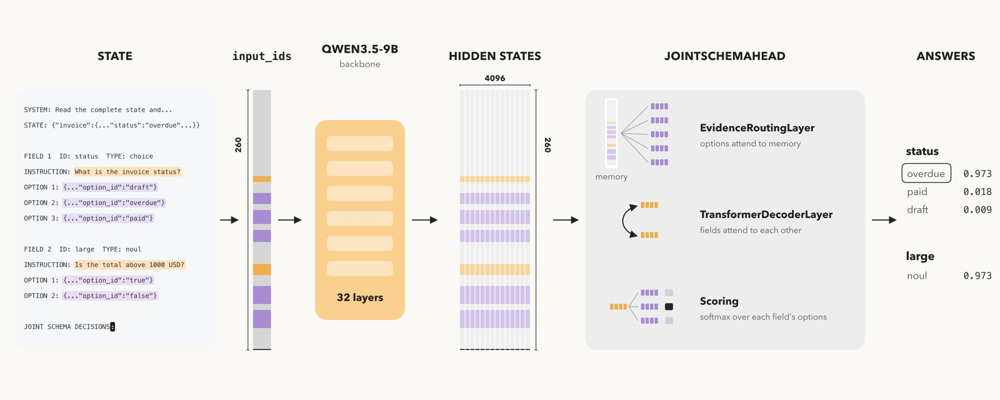
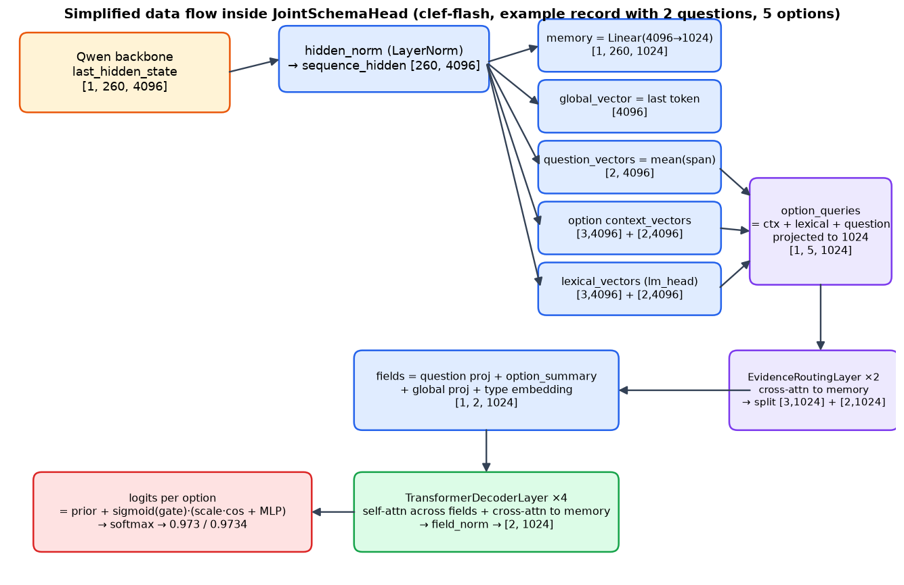
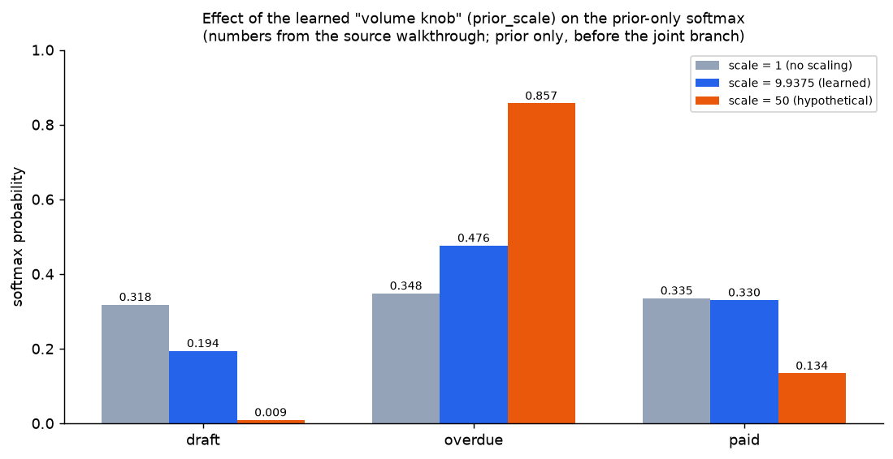

Ba chế độ đọc: dùng 3 nút tròn ở góc dưới bên phải để chuyển nhanh (trên điện thoại, ba nút nằm thành một thanh ở cuối màn hình để không đè chữ bên phải). VI — bản dịch tiếng Việt đầy đủ, theo từng đoạn. EN — nguyên văn tiếng Anh, không tách cụm. Cụm (mặc định, biểu tượng A gạch dưới) — tiếng Anh tách thành các cụm theo mệnh đề; rê chuột hoặc chạm vào một cụm để xem nghĩa tiếng Việt. Chạm lần nữa hoặc chạm ra ngoài để đóng; với cụm chứa liên kết, trên điện thoại chạm lần đầu để xem nghĩa, chạm lần hai để mở liên kết. Chế độ được ghi nhớ trên máy này; có thể mở thẳng bằng ?mode=vi, ?mode=en hoặc ?mode=chunk. Ở chế độ Cụm, ô “Gạch chân nhẹ các cụm” vẫn dùng được. Đây là bài tổng hợp có dịch và giải thích, không phải bản dịch nguyên văn. Ảnh tổng quan kiến trúc là của tác giả, đăng vì mục đích học tập phi thương mại có ghi công; hai sơ đồ còn lại do người viết vẽ.

Hình 1 trong bài của Aman Arora: tổng quan kiến trúc Clef. Hình thuộc về tác giả.
TL;DR
- Aman Arora đọc mã nguồn Clef (mô hình quyết định mã nguồn mở của Cloudflare) từng dòng và viết bản hướng dẫn từng bước bằng PyTorch, có mã chạy được với biến thể 9B
clef-flashtrên CPU. Điểm hấp dẫn: một câu hỏi như “hóa đơn đang ở trạng thái nào?” được trả lời bằng một lượt chạy xuôi duy nhất, không sinh chữ, ra ngay xác suất (ví dụ overdue = 0,973). - Kiến trúc gồm ba khối: nền ngôn ngữ Qwen3.5-9B đọc toàn bộ trạng thái và lược đồ câu hỏi;
JointSchemaHeadbiến vector ẩn thành điểm số cho từng đáp án; vàsoftmaxtrên từng câu hỏi. Bên trong đầu cóEvidenceRoutingLayer(mỗi đáp án “tra bằng chứng” trong ngữ cảnh bằng cross-attention) và 4 lớpTransformerDecoderLayer(các câu hỏi “nhìn nhau” để quyết định chung). - Trả lời sáu câu hỏi nền: khác phân loại thường vì không có lớp
Linear(d, số lớp)cố định; số đáp án mỗi câu có thể khác nhau; các câu dùng chung một giới hạn độ dài; thứ tự có thể ảnh hưởng nhẹ; và mô hình là tất định (không cótemperature, không lấy mẫu). - Từ phần trả lời: câu hỏi hợp lý về việc hiệu chuẩn xác suất có phải bước hậu kỳ hay được huấn luyện sẵn (bài chưa trả lời vì phần huấn luyện để dành cho bài sau), mong muốn nhìn được “đầu chú ý vào đâu”, và câu hỏi về tốc độ (số đo độ trễ nằm ở bài giới thiệu của Cloudflare chứ không có trong bài này).
Bài đăng nói về điều gì
What the post is about
What the post is about
Ngày 26/11/2026, @amaarora viết: “Mình đã dành vài ngày đọc từng dòng mã nguồn Clef của Cloudflare để hiểu các mô hình quyết định (Decision Models) thực sự hoạt động thế nào bên dưới.” Theo bài đăng, Clef dùng nền (backbone) Qwen, đầu ra của nền đi qua JointSchemaHead, rồi qua khâu định tuyến bằng chứng và trả về xác suất đã được hiệu chuẩn. Anh giải thích chi tiết từng phần và đăng bản hướng dẫn từng bước bằng PyTorch, kèm mã clef-flash chạy được trên CPU; liên kết tới bài blog nằm trong một bình luận trả lời của chính anh.
On 26 Nov 2026 @amaarora wrote: “Spent the last few days reading Cloudflare’s Clef source code line by line to understand how Decision Models actually work under the hood.” According to the post, Clef uses a Qwen backbone whose outputs go to a JointSchemaHead, then evidence routing, and return calibrated probabilities. He explained each part in depth and published a step-by-step PyTorch walkthrough with runnable clef-flash code on CPU; the blog link is in a reply to his own post.
On 26 Nov 2026 @amaarora wrote: “Spent the last few days reading Cloudflare’s Clef source code line by line to understand how Decision Models actually work under the hood.” According to the post, Clef uses a Qwen backbone whose outputs go to a JointSchemaHead, then evidence routing, and return calibrated probabilities. He explained each part in depth and published a step-by-step PyTorch walkthrough with runnable clef-flash code on CPU; the blog link is in a reply to his own post.
Bài này đi theo đúng trình tự của bản hướng dẫn — API, xử lý dữ liệu, nền, đầu, chấm điểm — bổ sung bối cảnh để đặt nó đúng chỗ (mô hình quyết định là gì, ai tạo ra Clef, Cloudflare tự báo cáo điều gì), vẽ thêm hai hình để dễ hình dung dòng chảy tensor, và tổng hợp những trả lời hữu ích.
This article follows the walkthrough in its own order — API, data processing, backbone, head, scoring — adds the background you need to place it (what a “decision model” is, who made Clef, what Cloudflare itself reports), draws two figures to make the tensor flow easier to hold in your head, and collects the useful replies.
This article follows the walkthrough in its own order — API, data processing, backbone, head, scoring — adds the background you need to place it (what a “decision model” is, who made Clef, what Cloudflare itself reports), draws two figures to make the tensor flow easier to hold in your head, and collects the useful replies.
Bối cảnh: mô hình quyết định và Clef
Background: decision models and Clef
Background: decision models and Clef
Bài ra mắt của Cloudflare (1/10/2026) mô tả mô hình quyết định là mô hình “tạo ra đầu ra có cấu trúc, bị giới hạn, một cách rẻ, nhanh và nhất quán”, có thể gắn thẳng vào quy trình khi cần đưa ra một quyết định. Bạn truyền vào dữ liệu (ví dụ một tin nhắn hỗ trợ khách hàng) và các câu hỏi định kiểu sẵn (có khẩn cấp không? nhóm nào nên xử lý?), rồi nhận về câu trả lời có kiểu kèm xác suất để mã nguồn của bạn định tuyến phiếu, báo cấp trên hoặc chuyển cho người xử lý. Cloudflare đối chiếu cách này với LLM vốn “phần lớn không tất định” nhưng đủ mở để suy luận, sinh văn bản và gọi công cụ.
Cloudflare’s launch post (1 Oct 2026) describes a decision model as one that “produces bounded structured outputs cheaply, quickly and consistently” and can be dropped into a workflow when a decision is required. You pass in an input (for example a customer-support message) and typed questions (is it urgent? which team should handle it?), and get typed answers with probabilities that your code can use to route a ticket, escalate, or defer to a human. Cloudflare contrasts this with LLMs, which are “largely non-deterministic” but open-ended enough to reason and generate text and tool calls.
Cloudflare’s launch post (1 Oct 2026) describes a decision model as one that “produces bounded structured outputs cheaply, quickly and consistently” and can be dropped into a workflow when a decision is required. You pass in an input (for example a customer-support message) and typed questions (is it urgent? which team should handle it?), and get typed answers with probabilities that your code can use to route a ticket, escalate, or defer to a human. Cloudflare contrasts this with LLMs, which are “largely non-deterministic” but open-ended enough to reason and generate text and tool calls.
Ý tưởng này được phổ biến bởi mô hình “System One” Jev của Typesafe AI, cái tên mà Cloudflare nhắc đến như khởi nguồn của làn sóng quan tâm gần đây. Clef là dòng mô hình riêng của Cloudflare: Clef và Clef-flash, chạy trên Workers AI và phát hành trọng số mở theo giấy phép Apache 2.0 trên Hugging Face. Chúng tương thích API với Jev. Cloudflare nêu ba điểm khác biệt so với Jev: có bộ mã hóa thị giác (hiện Jev chỉ xử lý văn bản), cửa sổ ngữ cảnh 64k (so với 32k của Jev) và điểm benchmark mà họ mô tả là cạnh tranh.
The idea was popularised by Typesafe AI’s Jev “System One” model, which Cloudflare names as the trigger for the recent buzz. Clef is Cloudflare’s own family: Clef and Clef-flash, hosted on Workers AI and released as open weights under Apache 2.0 on Hugging Face. They are Jev-API compatible. Cloudflare lists three differences from Jev: a vision encoder (Jev is text-only today), a 64k context window (against Jev’s 32k), and benchmark scores that it describes as competitive.
The idea was popularised by Typesafe AI’s Jev “System One” model, which Cloudflare names as the trigger for the recent buzz. Clef is Cloudflare’s own family: Clef and Clef-flash, hosted on Workers AI and released as open weights under Apache 2.0 on Hugging Face. They are Jev-API compatible. Cloudflare lists three differences from Jev: a vision encoder (Jev is text-only today), a 64k context window (against Jev’s 32k), and benchmark scores that it describes as competitive.
Bảng độ trễ do chính Cloudflare công bố (trung vị trên 43 benchmark tự chạy trên Workers AI): Clef-flash 38,8 ms, Clef 209,3 ms, Jev 524,1 ms. Theo phép tính của người viết, Clef-flash nhanh hơn Jev khoảng 13,5 lần và Clef nhanh hơn khoảng 2,5 lần. Đây là số liệu của nhà cung cấp trên hạ tầng của chính họ, không phải thử nghiệm độc lập. Cloudflare cũng cho biết họ dùng Clef nội bộ để phân loại tên miền website: mất 2,2 giây để tải, dựng trang và phân loại, so với 4,7 giây của gpt-oss-120b trong cùng quy trình.
Cloudflare’s own latency table (median over 43 benchmarks it ran, hosted on Workers AI): Clef-flash 38.8 ms, Clef 209.3 ms, Jev 524.1 ms. By the writer’s arithmetic that is about 13.5× faster than Jev for Clef-flash and about 2.5× for Clef. These are the vendor’s numbers on its own infrastructure, not an independent test. Cloudflare also reports using Clef internally to classify website domains: 2.2 s to fetch, render and classify against 4.7 s for gpt-oss-120b in the same workflow.
Cloudflare’s own latency table (median over 43 benchmarks it ran, hosted on Workers AI): Clef-flash 38.8 ms, Clef 209.3 ms, Jev 524.1 ms. By the writer’s arithmetic that is about 13.5× faster than Jev for Clef-flash and about 2.5× for Clef. These are the vendor’s numbers on its own infrastructure, not an independent test. Cloudflare also reports using Clef internally to classify website domains: 2.2 s to fetch, render and classify against 4.7 s for gpt-oss-120b in the same workflow.
Aman chọn Clef vì theo lời anh, đây là “một trong những kiến trúc mô hình và mã mẫu công khai gọn gàng nhất để bắt đầu”. Trong các ô mã chạy thử, anh dùng Cloudflare/clef-flash 9B (hậu huấn luyện từ Qwen3.5-9B) để chạy được trên CPU; anh cho biết JointSchemaHead của nó giống hệt bản 27B Cloudflare/clef (Qwen3.8-27B). Bài viết giới thiệu khái niệm trước đó của anh là “Jev: A New Way to Make Probabilistic Decisions” (19/9/2026).
Aman’s walkthrough picks Clef because, in his words, it was “one of the cleanest model architectures and public code samples to start with”. In the runnable cells he uses the 9B Cloudflare/clef-flash (post-trained from Qwen3.5-9B) so it runs on a CPU; he says its JointSchemaHead is identical to the 27B Cloudflare/clef (Qwen3.8-27B). His earlier post on the concept is “Jev: A New Way to Make Probabilistic Decisions” (19 Sep 2026).
Aman’s walkthrough picks Clef because, in his words, it was “one of the cleanest model architectures and public code samples to start with”. In the runnable cells he uses the 9B Cloudflare/clef-flash (post-trained from Qwen3.5-9B) so it runs on a CPU; he says its JointSchemaHead is identical to the 27B Cloudflare/clef (Qwen3.8-27B). His earlier post on the concept is “Jev: A New Way to Make Probabilistic Decisions” (19 Sep 2026).
Đọc thêm trên blog này: bản dịch bài “Đừng gọi đó là mô hình ra quyết định” của Typesafe (phân định đâu là chỗ cho nhận định của mô hình, đâu là chỗ cho mã thuần), OpenRouter Extractions API (trích xuất có kiểu trên một dòng mô hình liên quan) và “Không phải lúc nào cũng cần LLM”.
Related reading on this blog: the translation of Typesafe’s “Don’t Call It a Decision Model” (where to put model judgement versus plain code), the OpenRouter Extractions API (typed extraction on a related model line) and “Not everything needs an LLM”.
Related reading on this blog: the translation of Typesafe’s “Don’t Call It a Decision Model” (where to put model judgement versus plain code), the OpenRouter Extractions API (typed extraction on a related model line) and “Not everything needs an LLM”.
API System One: vào gì, ra gì
The System One API: what goes in, what comes out
The System One API: what goes in, what comes out
Ví dụ xuyên suốt bài là một hóa đơn. state là JSON thông thường; questions là từ điển chứa các câu hỏi có kiểu. Câu hỏi choice liệt kê đáp án trong criteria (mã đáp án → mô tả); câu noul là mệnh đề đúng/sai (prompt trong mã nguồn mô tả hai lựa chọn là “mệnh đề đúng hoặc câu trả lời là có” và ngược lại). Kiểu thứ ba xuất hiện trong mã nguồn là score.
The running example is an invoice. The state is plain JSON; questions is a dictionary of typed questions. A choice question lists its options in criteria (option id → description); a noul question is a yes/no proposition (the source’s prompt text describes its options as “The proposition is true or the answer is yes” and the opposite). The third type in the code is score.
The running example is an invoice. The state is plain JSON; questions is a dictionary of typed questions. A choice question lists its options in criteria (option id → description); a noul question is a yes/no proposition (the source’s prompt text describes its options as “The proposition is true or the answer is yes” and the opposite). The third type in the code is score.
record = {
"state": {"invoice": {"vendor": "Acme", "total": 1250.0, "currency": "USD", "status": "overdue"}},
"questions": {
"status": {
"type": "choice",
"instructions": "What is the invoice status?",
"criteria": {"paid": "Invoice is paid.", "overdue": "Invoice is past due.", "draft": "Not sent."},
},
"large": {"type": "noul", "instructions": "Is the total above 1000 USD?"},
},
"model": "clef-flash",
}Chạy systemone(model, processor, record) trả về (rút gọn từ kết quả trong nguồn):
Running systemone(model, processor, record) returns (abridged from the source output):
Running systemone(model, processor, record) returns (abridged from the source output):
{'model': 'clef-flash',
'answers': {'status': {'type': 'choice', 'choice': 'overdue', 'confidence': 0.973,
'probabilities': {'paid': 0.0176, 'overdue': 0.973, 'draft': 0.0094}},
'large': {'type': 'noul', 'noul': 0.9734}},
'usage': {'input_tokens': 260, 'output_tokens': 0}}Có hai điểm đáng chú ý. Thứ nhất, output_tokens bằng 0: không có token nào được sinh ra. Thứ hai, câu trả lời khớp với dữ liệu — hóa đơn đang quá hạn và 1.250 lớn hơn 1.000 — kèm theo xác suất để bạn đặt ngưỡng xử lý. Bản hướng dẫn đọc mã của systemone: kiểm tra tính hợp lệ của yêu cầu (mọi câu không phải noul đều cần criteria không rỗng), mã hóa đầu vào bằng encode_record, chạy một lượt xuôi ClefModel để lấy logit, rồi áp dụng softmax cho từng câu hỏi và định dạng kết quả bằng systemone_answer.
Two things stand out. First, output_tokens is 0: nothing is generated. Second, the answers are right for the data — the invoice is overdue, and 1,250 is above 1,000 — and each comes with a probability you can threshold. The walkthrough reads the source of systemone: validate the request (every non-noul question needs non-empty criteria), encode_record the input, run one forward pass of ClefModel to get logits, then apply softmax per question and format each answer with systemone_answer.
Two things stand out. First, output_tokens is 0: nothing is generated. Second, the answers are right for the data — the invoice is overdue, and 1,250 is above 1,000 — and each comes with a probability you can threshold. The walkthrough reads the source of systemone: validate the request (every non-noul question needs non-empty criteria), encode_record the input, run one forward pass of ClefModel to get logits, then apply softmax per question and format each answer with systemone_answer.
Trước khi đi sâu, Aman liệt kê sáu câu hỏi nảy ra khi anh mới tiếp cận mô hình quyết định: khác gì phân loại; làm sao xử lý mọi câu hỏi trong một lượt chạy; mỗi câu có thể có số đáp án khác nhau không; giới hạn ngữ cảnh cho trạng thái và câu hỏi là bao nhiêu; thứ tự đáp án có quan trọng không; và mô hình có tất định không. Câu cuối dễ kiểm chứng — chạy lại đúng ô đó và nhận kết quả y hệt — còn các câu khác được trả lời ở phần bên dưới.
Before diving in, Aman lists six questions that came to him when he first used decision models: how is it different from classification; how is every question processed in a single forward pass; can each question have a different number of options; what is the context limit for state and questions; does the ordering of options matter; and is it deterministic. The last is easy to test — run the same cell again and get an identical output — and the rest are answered in the section below.
Before diving in, Aman lists six questions that came to him when he first used decision models: how is it different from classification; how is every question processed in a single forward pass; can each question have a different number of options; what is the context limit for state and questions; does the ordering of options matter; and is it deterministic. The last is easy to test — run the same cell again and get an identical output — and the rest are answered in the section below.
Bước 1: mã hóa bản ghi thành văn bản
Step 1: turning the record into text
Step 1: turning the record into text
encode_record không đưa số liệu vào một lớp đầu vào đặc biệt nào. Nó dựng một prompt dạng hội thoại cho bộ tách token của Qwen: gồm một thông điệp hệ thống, trạng thái, và mỗi câu hỏi được trình bày thành một “trường” (field) kèm các đáp án cho phép. Trong mã nguồn, prompt hệ thống là “Hãy đọc toàn bộ trạng thái và lược đồ. Quyết định mọi trường một cách đồng thời. Mỗi câu trả lời phải đúng là một trong các đáp án cho phép của trường đó.” Lưu ý mã đáp án được sắp theo bảng chữ cái (draft, overdue, paid) và các khóa JSON của trạng thái cũng được sắp xếp tương tự.
encode_record does not feed numbers into a special input layer. It builds a chat-style prompt for the Qwen tokenizer: a system message, the state, and every question rendered as a “field” with its allowed options. In the source the system prompt reads “Read the complete state and schema. Decide every field jointly. Each answer must be exactly one of that field’s allowed options.” Note that option ids are sorted alphabetically (draft, overdue, paid) and the JSON state keys are sorted too.
encode_record does not feed numbers into a special input layer. It builds a chat-style prompt for the Qwen tokenizer: a system message, the state, and every question rendered as a “field” with its allowed options. In the source the system prompt reads “Read the complete state and schema. Decide every field jointly. Each answer must be exactly one of that field’s allowed options.” Note that option ids are sorted alphabetically (draft, overdue, paid) and the JSON state keys are sorted too.
<|im_start|>system
Read the complete state and schema. Decide every field jointly. Each answer must be exactly one of that field's allowed options.<|im_end|>
<|im_start|>user
STATE:
{"invoice":{"currency":"USD","status":"overdue","total":1250.0,"vendor":"Acme"}}
SCHEMA FIELDS:
FIELD 1
ID: status
TYPE: choice
INSTRUCTION: What is the invoice status?
ALLOWED OPTIONS:
OPTION 1: {"description":"Not sent.","option_id":"draft"}
OPTION 2: {"description":"Invoice is past due.","option_id":"overdue"}
OPTION 3: {"description":"Invoice is paid.","option_id":"paid"}
END FIELD
... (FIELD 2: large, TYPE: noul, OPTION 1 true, OPTION 2 false) ...<|im_end|>
<|im_start|>assistant
<think>
</think>
JOINT SCHEMA DECISIONS:Có hai chi tiết đáng chú ý. Khối <think></think> rỗng, theo bản hướng dẫn, là quy ước chính thức enable_thinking=False trong mẫu hội thoại của Qwen3/Qwen3.5: nó báo cho nền bỏ qua chuỗi suy luận và đưa trạng thái ẩn cuối cùng thẳng vào chế độ trả lời trực tiếp ngay trước JOINT SCHEMA DECISIONS:. Đồng thời, bộ mã hóa ghi lại các khoảng (span) — vị trí token bắt đầu và kết thúc của từng câu hỏi và từng đáp án (ví dụ câu status ở token 86–92) — vì sau này phần đầu (head) sẽ lấy trung bình trạng thái ẩn trên đúng các khoảng đó.
Two details are worth noticing. The empty <think></think> block is, per the walkthrough, the official enable_thinking=False convention in Qwen3/Qwen3.5’s chat template: it tells the backbone to skip chain-of-thought and put its final hidden state straight into direct-answer mode right before JOINT SCHEMA DECISIONS:. And the encoder records spans — the start and end token positions of each question and each option (for example question status at tokens 86–92) — because the head will later average the hidden states over exactly those spans.
Two details are worth noticing. The empty <think></think> block is, per the walkthrough, the official enable_thinking=False convention in Qwen3/Qwen3.5’s chat template: it tells the backbone to skip chain-of-thought and put its final hidden state straight into direct-answer mode right before JOINT SCHEMA DECISIONS:. And the encoder records spans — the start and end token positions of each question and each option (for example question status at tokens 86–92) — because the head will later average the hidden states over exactly those spans.
Bước 2: nền Qwen và tensor [1, 260, 4096]
Step 2: the Qwen backbone and the [1, 260, 4096] tensor
Step 2: the Qwen backbone and the [1, 260, 4096] tensor
ClefModel có cấu trúc rất gọn: một mô hình ngôn ngữ cộng thêm một JointSchemaHead. Lượt chạy xuôi của nó chạy mô hình văn bản trên input_ids (với use_cache=False) rồi chuyển last_hidden_state, các input id, mặt nạ chú ý, bản ghi đã mã hóa và ma trận embedding đầu ra của mô hình sang cho phần đầu. Với ví dụ trên, prompt dài 260 token và nền trả về một vector 4096 chiều cho mỗi token: một tensor có hình dạng [1, 260, 4096].
ClefModel is small: a language model plus a JointSchemaHead. Its forward pass runs the text model on input_ids (with use_cache=False) and hands last_hidden_state, the input ids, the attention mask, the encoded records and the model’s output-embedding matrix to the head. For the example, the prompt is 260 tokens and the backbone returns one 4096-dimensional vector per token: a tensor of shape [1, 260, 4096].
ClefModel is small: a language model plus a JointSchemaHead. Its forward pass runs the text model on input_ids (with use_cache=False) and hands last_hidden_state, the input ids, the attention mask, the encoded records and the model’s output-embedding matrix to the head. For the example, the prompt is 260 tokens and the backbone returns one 4096-dimensional vector per token: a tensor of shape [1, 260, 4096].
Cấu hình Qwen3.5 được in ra cho thấy rõ kiến trúc nền: kích thước ẩn 4096, 32 lớp, 16 đầu chú ý với 4 đầu khóa/giá trị, chiều mỗi đầu 256, kích thước MLP 12288, bộ từ vựng 248.320, vị trí tối đa 262.144, và danh sách layer_types xen kẽ linear_attention với full_attention theo full_attention_interval: 4 (ba lớp chú ý tuyến tính rồi một lớp chú ý đầy đủ, lặp lại; theo cách đếm của người viết là 8 lớp chú ý đầy đủ). Cấu hình còn có một tháp thị giác 27 lớp, không dùng khi đầu vào chỉ có văn bản. Lời nhắc quan trọng của tác giả: nền hoạt động theo cơ chế nhân quả (causal), nên mỗi token chỉ thấy được các token đứng trước nó, và token cuối cùng thấy toàn bộ chuỗi.
The printed Qwen3.5 config shows what that backbone is: hidden size 4096, 32 hidden layers, 16 attention heads with 4 key/value heads, head dimension 256, MLP size 12288, vocabulary 248,320, max positions 262,144, and a layer_types list that interleaves linear_attention and full_attention with full_attention_interval: 4 (three linear-attention layers, then one full-attention layer, repeated; by the writer’s count that is 8 full-attention layers). It also includes a 27-layer vision tower, unused for text-only input. The key reminder from the author: the backbone is causal, so each token has seen only the tokens before it, and the last token has seen everything.
The printed Qwen3.5 config shows what that backbone is: hidden size 4096, 32 hidden layers, 16 attention heads with 4 key/value heads, head dimension 256, MLP size 12288, vocabulary 248,320, max positions 262,144, and a layer_types list that interleaves linear_attention and full_attention with full_attention_interval: 4 (three linear-attention layers, then one full-attention layer, repeated; by the writer’s count that is 8 full-attention layers). It also includes a 27-layer vision tower, unused for text-only input. The key reminder from the author: the backbone is causal, so each token has seen only the tokens before it, and the last token has seen everything.

JointSchemaHead cho ví dụ hai câu hỏi, năm đáp án. Các hình dạng tensor lấy từ đầu ra trong bài gốc.Bước 3: JointSchemaHead, từng chặng
Step 3: the JointSchemaHead, stage by stage
Step 3: the JointSchemaHead, stage by stage
Đây là phần cốt lõi. Hàm khởi tạo cho thấy các kích thước: hidden_size=4096, width=1024, 2 lớp định tuyến, 4 lớp giải mã, 16 đầu chú ý, feed-forward 4096. Aman cho biết lượt chạy xuôi chỉ dài 114 dòng và hiểu được nó là hiểu toàn bộ kiến trúc Clef ngoài phần nền. Anh chia quy trình này thành bốn bước; dưới đây là diễn giải đơn giản.
This is the core. The constructor shows the sizes: hidden_size=4096, width=1024, 2 routing layers, 4 decoder layers, 16 heads, feed-forward 4096. Aman notes that the forward pass is 114 lines and that understanding it means understanding all of Clef’s architecture beyond the backbone. He splits it into four steps; here they are in plain terms.
This is the core. The constructor shows the sizes: hidden_size=4096, width=1024, 2 routing layers, 4 decoder layers, 16 heads, feed-forward 4096. Aman notes that the forward pass is 114 lines and that understanding it means understanding all of Clef’s architecture beyond the backbone. He splits it into four steps; here they are in plain terms.
3.1 Cắt trạng thái ẩn thành các vector có nghĩa
3.1 Cut the hidden states into meaningful vectors
3.1 Cut the hidden states into meaningful vectors
- memory: chuẩn hóa LayerNorm trạng thái ẩn, cắt phần đệm (padding), rồi chiếu 4096 → 1024 bằng một lớp tuyến tính. Hình dạng
[1, 260, 1024]. Đây là “kho bằng chứng” mà mọi lớp sau có thể tra cứu.memory: LayerNorm the hidden states, trim padding, and project 4096 → 1024 with a linear layer. Shape[1, 260, 1024]. This is the “evidence store” every later layer can look into.memory: LayerNorm the hidden states, trim padding, and project 4096 → 1024 with a linear layer. Shape[1, 260, 1024]. This is the “evidence store” every later layer can look into. - global_vector: trạng thái ẩn của token cuối cùng (4096 chiều), token đã đọc qua toàn bộ prompt.global_vector: the hidden state of the very last token (4096-d), which has seen the whole prompt.global_vector: the hidden state of the very last token (4096-d), which has seen the whole prompt.
- question_vectors: với mỗi câu hỏi, lấy trung bình trạng thái ẩn trên khoảng token của nó (các token “What is the invoice status?”). Hình dạng
[2, 4096]; bản hướng dẫn giải mã các khoảng để chứng minh chúng trỏ đúng vào đoạn văn bản tương ứng.question_vectors: for each question, the mean of the hidden states over its token span (the “What is the invoice status?” tokens). Shape[2, 4096]; the walkthrough decodes the spans to prove they point at the right text.question_vectors: for each question, the mean of the hidden states over its token span (the “What is the invoice status?” tokens). Shape[2, 4096]; the walkthrough decodes the spans to prove they point at the right text. - context_vectors theo từng đáp án: trung bình trạng thái ẩn trên khoảng của đáp án — điều mà nền ngôn ngữ “hiểu” về đáp án đó trong ngữ cảnh.context_vectors per option: the mean of the hidden states over the option’s span — what the backbone “understood” about that option in context.context_vectors per option: the mean of the hidden states over the option’s span — what the backbone “understood” about that option in context.
- lexical_vectors theo từng đáp án: trung bình các vector embedding đầu ra (trọng số
lm_head) của các token trong đáp án — mang nghĩa kiểu từ điển, không phụ thuộc ngữ cảnh, của câu chữ đáp án.lexical_vectors per option: the mean of the output-embedding vectors (thelm_headweights) of the option’s tokens — a context-free, dictionary-like meaning of the option text.lexical_vectors per option: the mean of the output-embedding vectors (thelm_headweights) of the option’s tokens — a context-free, dictionary-like meaning of the option text.
3.2 Mỗi đáp án một truy vấn, rồi “định tuyến bằng chứng”
3.2 One query per option, then “route evidence”
3.2 One query per option, then “route evidence”
Các câu hỏi có số lượng đáp án khác nhau (ở đây là 3 và 2), nhưng các lớp sau lại cần tensor đồng đều. Clef giải quyết bằng cách biến mỗi đáp án thành một truy vấn 1024 chiều bằng cách cộng ba tín hiệu đã chiếu — vector ngữ cảnh, vector từ vựng và vector câu hỏi mẹ của nó — rồi nối tất cả đáp án của mọi câu hỏi thành một chuỗi duy nhất: [1, 5, 1024], đồng thời ghi nhớ option_counts = [3, 2] để tách lại sau.
Different questions have different numbers of options (3 and 2 here), yet the next layers need regular tensors. Clef solves this by turning every option into a 1024-d query that adds three projected signals — its context vector, its lexical vector and its parent question vector — and then concatenating all options of all questions into one sequence: [1, 5, 1024], remembering option_counts = [3, 2] so it can split them back later.
Different questions have different numbers of options (3 and 2 here), yet the next layers need regular tensors. Clef solves this by turning every option into a 1024-d query that adds three projected signals — its context vector, its lexical vector and its parent question vector — and then concatenating all options of all questions into one sequence: [1, 5, 1024], remembering option_counts = [3, 2] so it can split them back later.
Các truy vấn đó đi qua hai lớp EvidenceRoutingLayer. Mỗi lớp là một khối cross-attention chuẩn hóa trước (pre-norm): các truy vấn (đáp án) chú ý vào memory (toàn bộ prompt), rồi đi qua mạng feed-forward GELU, cả hai đều có kết nối phần dư (residual connection). Mã lượt chạy xuôi của nó khá ngắn gọn:
Those queries pass through two EvidenceRoutingLayers. Each is a pre-norm cross-attention block: queries (the options) attend to memory (the whole prompt), then a GELU feed-forward network, both with residual connections. The source of its forward pass is short:
Those queries pass through two EvidenceRoutingLayers. Each is a pre-norm cross-attention block: queries (the options) attend to memory (the whole prompt), then a GELU feed-forward network, both with residual connections. The source of its forward pass is short:
def forward(self, queries, memory):
normalized_queries = self.query_norm(queries)
routed, _ = self.attention(
normalized_queries,
self.memory_norm(memory),
self.memory_norm(memory),
need_weights=False,
)
queries = queries + self.attention_dropout(routed)
return queries + self.feedforward(self.feedforward_norm(queries))Nói một cách đơn giản: mỗi đáp án tự đọc prompt và thu thập bất kỳ bằng chứng nào trong trạng thái và câu hỏi giúp quyết định chính đáp án đó. Vì mọi đáp án được gộp chung theo lô, bước này chỉ tốn đúng một lượt attention; sau đó kết quả được tách lại theo từng câu hỏi bằng torch.split(…, option_counts). Hãy để ý tham số need_weights=False: lớp này bỏ qua trọng số attention, chi tiết này liên quan trực tiếp đến một trong các trả lời bên dưới.
In words: every option reads the prompt and collects whatever evidence in the state and the question helps decide that option. Because all options are batched together, this costs one attention pass; afterwards the result is split back per question with torch.split(…, option_counts). Notice need_weights=False: the layer discards its attention weights, which matters for one of the replies below.
In words: every option reads the prompt and collects whatever evidence in the state and the question helps decide that option. Because all options are batched together, this costs one attention pass; afterwards the result is split back per question with torch.split(…, option_counts). Notice need_weights=False: the layer discards its attention weights, which matters for one of the replies below.
3.3 Gộp đáp án thành vector trường và cho các trường “nói chuyện”
3.3 Collapse options into a field vector and let fields talk
3.3 Collapse options into a field vector and let fields talk
Với mỗi câu hỏi, vector câu hỏi đã chiếu (base_fields) được so với các đáp án đã định tuyến của câu đó bằng tích vô hướng, chia cho √1024 rồi qua softmax để tạo ra routing_weights; tổng có trọng số của các đáp án chính là option_summary. Giả thuyết của Aman là các trọng số này sẽ hội tụ về đáp án đúng, và với câu hỏi thứ hai kết quả đúng như vậy: tensor([1., 0.]), toàn bộ trọng số dồn vào đáp án “có”.
For each question, its projected question vector (base_fields) is compared by dot product with that question’s routed options, scaled by √1024 and passed through a softmax to produce routing_weights; the weighted sum of options is the option_summary. Aman’s hypothesis was that the weights would converge on the right option, and for the second question they do: tensor([1., 0.]), all weight on the “yes” option.
For each question, its projected question vector (base_fields) is compared by dot product with that question’s routed options, scaled by √1024 and passed through a softmax to produce routing_weights; the weighted sum of options is the option_summary. Aman’s hypothesis was that the weights would converge on the right option, and for the second question they do: tensor([1., 0.]), all weight on the “yes” option.
Sau đó bốn vector được cộng lại thành một vector trường cho mỗi câu hỏi: phép chiếu câu hỏi, bản tóm tắt đáp án (đã chuẩn hóa), vector toàn cục đã chiếu và embedding học được của kiểu câu hỏi (noul/choice/score). Các trường ([1, 2, 1024]) đi qua bốn lớp TransformerDecoderLayer. Khác với lớp định tuyến, mỗi lớp này bắt đầu bằng bước tự chú ý (self-attention) không che (unmasked), nên câu 1 (status) nhìn thấy được câu 2 (large) cùng đáp án dự kiến của nó và ngược lại, rồi tiếp tục cross-attention vào memory để kiểm tra lại bằng chứng. Đây chính là ý nghĩa của chữ “joint” trong joint schema: các trường được quyết định đồng thời với nhau, chứ không phải từng câu riêng lẻ.
Then four vectors are summed into one field vector per question: the question projection, the (normalised) option summary, the projected global vector and a learned embedding of the question type (noul/choice/score). The fields ([1, 2, 1024]) go through four TransformerDecoderLayers. Unlike the routing layer, each of these has a self-attention step first, with no mask, so question 1 (status) can see question 2 (large) and its tentative answer and vice versa, followed by cross-attention to memory to re-check the evidence. This is the “joint” in joint schema: the fields are decided together, not one by one.
Then four vectors are summed into one field vector per question: the question projection, the (normalised) option summary, the projected global vector and a learned embedding of the question type (noul/choice/score). The fields ([1, 2, 1024]) go through four TransformerDecoderLayers. Unlike the routing layer, each of these has a self-attention step first, with no mask, so question 1 (status) can see question 2 (large) and its tentative answer and vice versa, followed by cross-attention to memory to re-check the evidence. This is the “joint” in joint schema: the fields are decided together, not one by one.
Bước 4: từ vector ra xác suất 0,973
Step 4: from vectors to the 0.973
Step 4: from vectors to the 0.973
Cuối cùng mỗi đáp án nhận một giá trị logit, ghép từ hai nhánh cộng lại. Mã nguồn (đã rút gọn):
Finally each option gets one logit, built from two branches added together. The code (abridged):
Finally each option gets one logit, built from two branches added together. The code (abridged):
# prior branch: how close is the option's raw word meaning to "question + global" context?
anchor = normalize(question_vectors[i] + global_vector) # [4096]
lexical_anchor = normalize(lexical) # [n_options, 4096]
prior_scale = prior_logit_scale.clamp(max=log(100)).exp() # 9.9375 learned
prior = prior_scale * (lexical_anchor @ anchor) # cosine similarity * scale
# joint branch: how well does the decided field match each routed option?
features = cat([field, options, field * options, abs(field - options)], -1) # [n, 4096]
residual = residual_scorer(features).squeeze(-1) # 2-layer GELU MLP: 4096 -> 1024 -> 1
joint = joint_scale * cosine(field, options) + residual
final_logits = prior + sigmoid(residual_gate) * joint
probabilities = final_logits.softmax(-1)Nhánh prior. Cả hai vector đều được chuẩn hóa L2, nên tích ma trận chính là độ tương đồng cosine — một con số trong [−1, 1] cho mỗi đáp án. Đứng một mình, nó là tín hiệu yếu (0,007; 0,097; 0,060 cho draft, overdue, paid), vì vậy Clef nhân với một “núm âm lượng” học được. Lưu trong không gian log và chặn ở log(100), núm này dùng đúng mẹo của CLIP: exp() giữ hệ số luôn dương (không bao giờ đảo ngược thứ hạng) và phép chặn giới hạn ở 100 để quá trình huấn luyện không đẩy softmax thành quá tự tin. Clef học được prior_logit_scale ≈ 2,296, tương ứng hệ số nhân 9,9375.
The prior branch. Both vectors are L2-normalised, so the matrix product is exactly cosine similarity, a number in [−1, 1] per option. That is a weak signal on its own (0.007, 0.097, 0.060 for draft, overdue, paid), so Clef multiplies it by a learned “volume knob”. Stored in log space and clamped at log(100), the knob is the same trick CLIP uses: exp() keeps it strictly positive (it can never flip the ranking) and the clamp caps it at 100 so training cannot make the softmax wildly overconfident. Clef learned prior_logit_scale ≈ 2.296, i.e. a multiplier of 9.9375.
The prior branch. Both vectors are L2-normalised, so the matrix product is exactly cosine similarity, a number in [−1, 1] per option. That is a weak signal on its own (0.007, 0.097, 0.060 for draft, overdue, paid), so Clef multiplies it by a learned “volume knob”. Stored in log space and clamped at log(100), the knob is the same trick CLIP uses: exp() keeps it strictly positive (it can never flip the ranking) and the clamp caps it at 100 so training cannot make the softmax wildly overconfident. Clef learned prior_logit_scale ≈ 2.296, i.e. a multiplier of 9.9375.
Hệ số (prior_scale) | Logit sau nhân (draft, overdue, paid) | Sau softmax (draft, overdue, paid) |
|---|---|---|
| 1 (không nhân) | 0.007, 0.097, 0.060 | 0.318, 0.348, 0.335 — gần như phẳng |
| 9.9375 (Clef học được) | 0.068, 0.965, 0.598 | 0.194, 0.476, 0.330 — overdue nhỉnh nhất |
| 50 (giả định) | 0.340, 4.860, 3.005 | 0.009, 0.857, 0.134 — rất nhọn |

Nhánh joint. Ở đây vector trường đã quyết định (sau bốn lớp giải mã) được so sánh với từng đáp án đã định tuyến. Cosine thuần túy chỉ hỏi “hai vector có hướng giống nhau không?”, vốn khá cứng nhắc với các lựa chọn bất đối xứng. Vì vậy Clef mượn mẹo tương tác cặp từ InferSent (Conneau và cộng sự, 2017): với mỗi cặp (trường u, đáp án v) nối [u, v, u·v, |u−v|] (4 × 1024 = 4096 số) rồi đưa qua một mạng MLP nhỏ để chấm điểm. Trên ví dụ, MLP xuất ra khoảng −41,25; −11,75; −40,50 cho draft, overdue, paid — chênh khoảng 30 điểm nghiêng hẳn về overdue.
The joint branch. Here the decided field vector (after the four decoder layers) is compared with each routed option. Plain cosine only asks “do these point the same way?”, which is rigid for asymmetric choices. So Clef borrows the pair-interaction trick from InferSent (Conneau et al. 2017): for each (field u, option v) concatenate [u, v, u·v, |u−v|] (4 × 1024 = 4096 numbers) and let a small MLP score it. On the example, the MLP outputs roughly −41.25, −11.75, −40.50 for draft, overdue, paid — about a 30-point gap in favour of overdue.
The joint branch. Here the decided field vector (after the four decoder layers) is compared with each routed option. Plain cosine only asks “do these point the same way?”, which is rigid for asymmetric choices. So Clef borrows the pair-interaction trick from InferSent (Conneau et al. 2017): for each (field u, option v) concatenate [u, v, u·v, |u−v|] (4 × 1024 = 4096 numbers) and let a small MLP score it. On the example, the MLP outputs roughly −41.25, −11.75, −40.50 for draft, overdue, paid — about a 30-point gap in favour of overdue.
Pha trộn. Điểm joint là joint_scale × cosine + residual (cùng kiểu hệ số như CLIP, ở đây lại là 9,9375), và được cộng vào prior qua một cổng vô hướng (scalar gate) học được, sigmoid(residual_gate), có giá trị 0,1191 trong ví dụ. Logit cuối là [−5,1562; −0,5195; −4,5312]; qua softmax cho [0,0094; 0,9730; 0,0176], khớp đúng với con số 0,973 ở ô đầu tiên. Cách đọc của người viết: chỉ riêng nhánh prior cho overdue khoảng 48%, nên phần lớn độ tin cậy cuối cùng đến từ nhánh joint — nhánh thực sự đọc trạng thái. Câu hỏi thứ hai chạy qua cùng vòng lặp và cho xác suất 0,9734 với true.
Blending. The joint score is joint_scale × cosine + residual (the same CLIP-style scale, here 9.9375 again), and it is added to the prior through a learned scalar gate, sigmoid(residual_gate), which is 0.1191 in the example. The final logits are [−5.1562, −0.5195, −4.5312]; a softmax gives [0.0094, 0.9730, 0.0176], landing exactly on the 0.973 from the first cell. The writer’s reading: the prior alone gives overdue only about 48%, so most of the final confidence comes from the joint branch — the part that actually reads the state. The second question runs through the same loop and gives 0.9734 for true.
Blending. The joint score is joint_scale × cosine + residual (the same CLIP-style scale, here 9.9375 again), and it is added to the prior through a learned scalar gate, sigmoid(residual_gate), which is 0.1191 in the example. The final logits are [−5.1562, −0.5195, −4.5312]; a softmax gives [0.0094, 0.9730, 0.0176], landing exactly on the 0.973 from the first cell. The writer’s reading: the prior alone gives overdue only about 48%, so most of the final confidence comes from the joint branch — the part that actually reads the state. The second question runs through the same loop and gives 0.9734 for true.
Sáu câu hỏi nền, được trả lời
The six opening questions, answered
The six opening questions, answered
- Khác gì phân loại thông thường? Không có đầu
Linear(d, số_lớp)cố định. Mỗi đáp án được mã hóa động từ khoảng văn bản của chính nó (trạng thái ẩn theo ngữ cảnh cộng embeddinglm_headtĩnh) và được chấm điểm với biểu diễn của trường — vì thế bộ nhãn mới không cần huấn luyện lại đầu phân loại mới.How is it different from classification? There is no fixedLinear(d, num_classes)head. Every option is encoded dynamically from its own text span (contextual hidden states plus staticlm_headembeddings) and scored against its field representation — which is why new label sets need no new head.How is it different from classification? There is no fixedLinear(d, num_classes)head. Every option is encoded dynamically from its own text span (contextual hidden states plus staticlm_headembeddings) and scored against its field representation — which is why new label sets need no new head. - Làm sao xử lý mọi câu hỏi trong một lượt? Nền chạy đúng một lượt prefill qua toàn bộ trạng thái và lược đồ (không sinh token), còn phần đầu chấm điểm tất cả câu hỏi và đáp án song song bằng cross-attention vào
memoryvà self-attention giữa các trường.How is every question processed in one pass? The backbone does a single prefill over the whole state and schema (no token generation), and the head scores all questions and options in parallel using cross-attention to memory and self-attention across fields.How is every question processed in one pass? The backbone does a single prefill over the whole state and schema (no token generation), and the head scores all questions and options in parallel using cross-attention to memory and self-attention across fields. - Số đáp án mỗi câu khác nhau được không? Được. Đáp án được gom theo câu hỏi thành các tensor độ dài thay đổi (
[3, 4096]và[2, 4096]), nối thành một tensor truy vấn phẳng ([1, 5, 1024]), tách lại bằngoption_counts = [3, 2]và gộp bằng attention pooling.Different numbers of options per question? Yes. Options are pooled per question into variable-length tensors ([3, 4096]and[2, 4096]), concatenated into one flat query tensor ([1, 5, 1024]), split back withoption_counts = [3, 2]and collapsed by attention pooling.Different numbers of options per question? Yes. Options are pooled per question into variable-length tensors ([3, 4096]and[2, 4096]), concatenated into one flat query tensor ([1, 5, 1024]), split back withoption_counts = [3, 2]and collapsed by attention pooling. - Giới hạn ngữ cảnh? Trạng thái và câu hỏi dùng chung một
max_length(mặc định 16384 trongencode_record), tối đa bằng cửa sổ ngữ cảnh của nền. (Bài ra mắt của Cloudflare quảng bá mức 64k cho Clef.)Context limit? State and questions share one jointmax_length(default 16384 inencode_record), up to the backbone’s context window. (Cloudflare’s launch post advertises 64k for Clef.)Context limit? State and questions share one jointmax_length(default 16384 inencode_record), up to the backbone’s context window. (Cloudflare’s launch post advertises 64k for Clef.) - Thứ tự có quan trọng không? Có thể. Khóa của
choiceđược sắp theo bảng chữ cái nên thứ tự khóa là tất định, nhưng vì nền thuần nhân quả (causal), câu hỏi và đáp án đứng sau thấy được phần đứng trước chứ không ngược lại, cho đến khi các lớp định tuyến và giải mã chạy.Does ordering matter? It might. Choice keys are sorted alphabetically, which makes key order deterministic, but because the backbone is strictly causal, later questions and options see earlier ones and not the reverse until the routing and decoder layers run.Does ordering matter? It might. Choice keys are sorted alphabetically, which makes key order deterministic, but because the backbone is strictly causal, later questions and options see earlier ones and not the reverse until the routing and decoder layers run. - Có tất định không? Có: không có vòng lấy mẫu, không có
temperaturehaytop_p, chỉ một lượt chạy xuôi và một hàm softmax. Kết quả giống hệt nhau ở lần chạy thứ hai chứng minh điều đó.Deterministic? Yes: no sampling loop, notemperatureortop_p, just one forward pass and a softmax. The identical output on the second run shows it.Deterministic? Yes: no sampling loop, notemperatureortop_p, just one forward pass and a softmax. The identical output on the second run shows it.
Phần trả lời bổ sung những gì
What the replies add
What the replies add
Tại thời điểm đọc, bài đăng có 7 trả lời (30 lượt thích, 23 lượt lưu, khoảng 1.200 lượt xem). Hai trả lời là lời khen chung chung (“làm tốt lắm”, “đọc mã từng dòng là cách tốt nhất để hiểu kiến trúc”). Những ý có nội dung chuyên môn:
The post had 7 replies when read (30 likes, 23 bookmarks, about 1,200 views). Two are generic praise (“nice work”, “reading code line by line is the best way to really understand architecture”). The substantive ones:
The post had 7 replies when read (30 likes, 23 bookmarks, about 1,200 views). Two are generic praise (“nice work”, “reading code line by line is the best way to really understand architecture”). The substantive ones:
- Hiệu chuẩn: hậu kỳ hay huấn luyện sẵn? @sweatyfounder cho rằng phần xác suất đã hiệu chuẩn là điểm anh muốn đào sâu tiếp: hiệu chuẩn là một bước hậu kỳ như temperature scaling trên tập dữ liệu kiểm định riêng (held-out set), hay được huấn luyện thẳng vào đầu joint? Nếu là hậu kỳ, anh lưu ý, mỗi lược đồ hay bộ nhãn mới sẽ cần một tập kiểm định riêng để duy trì hiệu chuẩn. Bản hướng dẫn chưa trả lời vì bỏ qua phần huấn luyện (“Huấn luyện hay Brier loss… chúng ta sẽ làm ở bài tiếp theo”). Ghi chú của người viết: phần kết có nhắc tới “hiệu chuẩn bằng Brier loss” trong các chủ đề huấn luyện và phần đầu cũng chứa các tham số tỉ lệ/cổng học được, gợi ý hiệu chuẩn được hình thành trong lúc huấn luyện, nhưng đó mới là suy luận chứ bài không khẳng định. Liệu xác suất có giữ được độ hiệu chuẩn với bộ nhãn hoàn toàn mới hay không chính là câu hỏi mở cần tự kiểm chứng.Calibration: post-hoc or trained in? @sweatyfounder says the calibrated-probabilities part is what he would dig into next: is calibration a post-hoc step such as temperature scaling on held-out data, or trained into the joint head? If it is post-hoc, he notes, every new schema or label set would need its own held-out set to stay calibrated. The walkthrough does not answer this, because it skips training (“Training or Brier loss… we will be doing that in a follow up”). Writer’s note: the closing section does list “Brier loss calibration” among the training topics and the head contains learned scale/gate parameters, which suggests calibration is shaped during training, but that is an inference, not something the post states. Whether probabilities stay calibrated for a brand-new label set is exactly the open question to test.Calibration: post-hoc or trained in? @sweatyfounder says the calibrated-probabilities part is what he would dig into next: is calibration a post-hoc step such as temperature scaling on held-out data, or trained into the joint head? If it is post-hoc, he notes, every new schema or label set would need its own held-out set to stay calibrated. The walkthrough does not answer this, because it skips training (“Training or Brier loss… we will be doing that in a follow up”). Writer’s note: the closing section does list “Brier loss calibration” among the training topics and the head contains learned scale/gate parameters, which suggests calibration is shaped during training, but that is an inference, not something the post states. Whether probabilities stay calibrated for a brand-new label set is exactly the open question to test.
- Định tuyến bằng chứng và khả năng giải thích. @JiebiaoGan nhận xét xác suất hiệu chuẩn là thứ phân biệt mô hình quyết định với bộ phân loại — “0,973 cho ‘override’ so với 0,009 cho ‘draft’ là độ tin cậy đủ để bạn dùng định tuyến” — và bên trong, lớp định tuyến bằng chứng là chỗ anh muốn quan sát: biết phần đầu đã chú ý vào đoạn bộ nhớ nào quan trọng hơn điểm số khi một quyết định bị sai. (Nhãn trong ví dụ của anh là anh tự đặt; ví dụ trong bài dùng overdue và draft.) Ghi chú của người viết: trong mã được trích,
EvidenceRoutingLayergọi attention vớineed_weights=False, nên các trọng số đó mặc định bị bỏ qua; muốn xem phải sửa lại lớp này.Evidence routing and explainability. @JiebiaoGan argues calibrated probabilities are what separate a decision model from a classifier — “a 0.973 on ‘override’ versus 0.009 on ‘draft’ is a confidence you can actually route on” — and that inside, the evidence routing layer is what he would want to see: knowing which memory the head attended to matters more than the score when a decision goes wrong. (His example labels are his own; the post’s example uses overdue and draft.) Writer’s note: in the code shown,EvidenceRoutingLayercalls attention withneed_weights=False, so those weights are not returned by default; you would have to patch the layer to inspect them.Evidence routing and explainability. @JiebiaoGan argues calibrated probabilities are what separate a decision model from a classifier — “a 0.973 on ‘override’ versus 0.009 on ‘draft’ is a confidence you can actually route on” — and that inside, the evidence routing layer is what he would want to see: knowing which memory the head attended to matters more than the score when a decision goes wrong. (His example labels are his own; the post’s example uses overdue and draft.) Writer’s note: in the code shown,EvidenceRoutingLayercalls attention withneed_weights=False, so those weights are not returned by default; you would have to patch the layer to inspect them. - Tốc độ. @Raju_dev0 hỏi ngắn gọn “Còn tốc độ thì sao?”. Bài hướng dẫn này không đo tốc độ. Điều có thể rút ra từ các nguồn: mỗi yêu cầu chỉ tốn một lượt prefill và 0 token đầu ra (
usagetrong ví dụ), và bảng của chính Cloudflare báo cáo độ trễ trung vị 38,8 ms (Clef-flash) và 209,3 ms (Clef) trên Workers AI — không phải đo trên laptop CPU như trong bài hướng dẫn, nơi nhật ký của Aman còn cho thấy các lớp chú ý tuyến tính của Qwen phải chạy nhân dự phòng chậm vì chưa cài gói tùy chọn.Speed. @Raju_dev0 asked simply “What about speed?”. This post does not benchmark speed. What can be said from sources: one prefill pass and zero output tokens per request (usagein the example), and Cloudflare’s own table reports median latencies of 38.8 ms (Clef-flash) and 209.3 ms (Clef) on Workers AI — not measured on a CPU laptop like the walkthrough, where Aman’s logs also show slow fallback kernels for the Qwen linear-attention layers because optional packages were not installed.Speed. @Raju_dev0 asked simply “What about speed?”. This post does not benchmark speed. What can be said from sources: one prefill pass and zero output tokens per request (usagein the example), and Cloudflare’s own table reports median latencies of 38.8 ms (Clef-flash) and 209.3 ms (Clef) on Workers AI — not measured on a CPU laptop like the walkthrough, where Aman’s logs also show slow fallback kernels for the Qwen linear-attention layers because optional packages were not installed. - Một video giải thích và chi tiết về tên gọi. @sir_untamable bình luận rằng bài này xuất hiện đúng lúc anh vừa đăng một video giải thích ngắn về “clairic và cách nó so với LLM truyền thống”. Video của anh (4 phút 52 giây, làm bằng Fable 5.2, Remotion và ElevenLabs) trích một bài ngày 18/11 công bố “clairic (27B) và clairic-flash (9B)… phát hành trọng số!”. Mô hình trong bài hướng dẫn của Aman và trên Hugging Face mang tên Clef / Clef-flash (27B và 9B). Người viết chưa xem video và không xác nhận được quan hệ giữa Clairic và Clef — có thể là đổi tên hoặc hai dòng liên quan; bài về OpenRouter trước đó trên blog này coi Clairic là mô hình trích xuất — nên bài này giữ tên Clef theo đúng các nguồn được trích dẫn.An explainer video, and a naming wrinkle. @sir_untamable replied that the post showed up as he published a short explainer on “clairic and how it compares to traditional LLMs”. His video (4 min 52 s, made with Fable 5.2, Remotion and ElevenLabs) quotes a Nov 18 post announcing “clairic (27B) and clairic-flash (9B)… weights release!”. The model in Aman’s walkthrough and on Hugging Face is called Clef / Clef-flash (27B and 9B). The writer did not watch the video and could not confirm how Clairic and Clef relate — they may be a renaming or related lines; the earlier OpenRouter post on this blog treats Clairic as an extraction model — so this article sticks to the name Clef used by the sources it quotes.An explainer video, and a naming wrinkle. @sir_untamable replied that the post showed up as he published a short explainer on “clairic and how it compares to traditional LLMs”. His video (4 min 52 s, made with Fable 5.2, Remotion and ElevenLabs) quotes a Nov 18 post announcing “clairic (27B) and clairic-flash (9B)… weights release!”. The model in Aman’s walkthrough and on Hugging Face is called Clef / Clef-flash (27B and 9B). The writer did not watch the video and could not confirm how Clairic and Clef relate — they may be a renaming or related lines; the earlier OpenRouter post on this blog treats Clairic as an extraction model — so this article sticks to the name Clef used by the sources it quotes.
Giới hạn và những gì bài chưa nói
Limits and what the post does not cover
Limits and what the post does not cover
- Tác giả chưa đề cập: đầu vào đa phương thức (ảnh và âm thanh; bản hướng dẫn giữ trạng thái chỉ là văn bản), và phần huấn luyện — gồm tinh chỉnh LoRA và hiệu chuẩn bằng Brier loss — mà anh hẹn ở bài tiếp theo, cùng với so sánh cách
mammoth-1,pplx-decidervàGLiDEgiải quyết cùng bài toán (ví dụ chú ý hai chiều theo khối thay vì một đầu giải mã riêng) và khả năng huấn luyện một mô hình trên tập Decision Index công khai.Not covered by the author: multimodal inputs (images and audio; the walkthrough keeps state as text-only), and training — including LoRA adaptation and Brier-loss calibration — which he promises for a follow-up, along with a comparison of howmammoth-1,pplx-deciderandGLiDEtackle the same problem (for instance block-bidirectional attention instead of a separate decoder head) and possibly training a model on the public Decision Index.Not covered by the author: multimodal inputs (images and audio; the walkthrough keeps state as text-only), and training — including LoRA adaptation and Brier-loss calibration — which he promises for a follow-up, along with a comparison of howmammoth-1,pplx-deciderandGLiDEtackle the same problem (for instance block-bidirectional attention instead of a separate decoder head) and possibly training a model on the public Decision Index. - Đối tượng đọc: anh giả định người đọc đã nắm PyTorch, self-attention và cross-attention, đồng thời lưu ý các phần về đầu là kỹ thuật nhất — hãy đọc kỹ lại, hoặc nhờ một trợ lý giải thích thêm.Audience: he assumes you know PyTorch, self-attention and cross-attention, and warns that the head sections are the most technical — re-read them, or ask an assistant.Audience: he assumes you know PyTorch, self-attention and cross-attention, and warns that the head sections are the most technical — re-read them, or ask an assistant.
- Đây là bản hướng dẫn, không phải benchmark. Một bản ghi hóa đơn minh họa cơ chế hoạt động và chứng minh các tensor tái tạo đúng xác suất của API (0,973 và 0,9734). Nó không nói lên độ chính xác trên dữ liệu thực tế của bạn; các số benchmark đều lấy từ bài ra mắt của Cloudflare và là số đo nội bộ của nhà cung cấp.It is a walkthrough, not a benchmark. One invoice record shows the mechanics and that the tensors reproduce the API’s probabilities (0.973 and 0.9734). It says nothing about accuracy on your data; the benchmark numbers come from Cloudflare’s launch post and are the vendor’s own.It is a walkthrough, not a benchmark. One invoice record shows the mechanics and that the tensors reproduce the API’s probabilities (0.973 and 0.9734). It says nothing about accuracy on your data; the benchmark numbers come from Cloudflare’s launch post and are the vendor’s own.
- Độ gọn của mã nguồn: Aman nhận xét khi viết bài anh thấy “nhiều chỗ có thể tối ưu lại cho mã nguồn gọn gàng hơn”, và tên biến có thể đặt rõ nghĩa hơn nhưng anh giữ nguyên để khớp với mã gốc.Code hygiene: Aman remarks that, while writing it, he saw “opportunities on where the codebase could be made tidier”, and that variable names could be improved but he kept them to match the source.Code hygiene: Aman remarks that, while writing it, he saw “opportunities on where the codebase could be made tidier”, and that variable names could be improved but he kept them to match the source.
Tự thử
Try it yourself
Try it yourself
Thẻ mô hình Cloudflare/clef-flash trên Hugging Face (Apache-2.0, mô hình nền Qwen/Qwen3.5-9B, Cloudflare thử nghiệm với torch 2.11 và transformers 5.10.2 trên một GPU H200) đi kèm joint_schema_model.py chứa bộ nạp và hàm systemone. Các dòng lệnh nạp dưới đây là đoạn dùng trong bản hướng dẫn (chạy CPU). Hãy chuẩn bị tâm lý là chạy CPU sẽ chậm: nhật ký cảnh báo causal_conv1d và flash-linear-attention sẽ lùi về chạy bằng bản tham chiếu nếu chưa cài đặt.
The model card for Cloudflare/clef-flash on Hugging Face (Apache-2.0, base model Qwen/Qwen3.5-9B, tested by Cloudflare with torch 2.11 and transformers 5.10.2 on a single H200) ships joint_schema_model.py with the loader and systemone. The loading lines below are the ones used in the walkthrough (CPU). Expect it to be slow on CPU: the logs warn that causal_conv1d and flash-linear-attention fall back to reference implementations unless installed.
The model card for Cloudflare/clef-flash on Hugging Face (Apache-2.0, base model Qwen/Qwen3.5-9B, tested by Cloudflare with torch 2.11 and transformers 5.10.2 on a single H200) ships joint_schema_model.py with the loader and systemone. The loading lines below are the ones used in the walkthrough (CPU). Expect it to be slow on CPU: the logs warn that causal_conv1d and flash-linear-attention fall back to reference implementations unless installed.
from huggingface_hub import snapshot_download
from joint_schema_model import load_release_model, systemone
path = snapshot_download("Cloudflare/clef-flash")
model, processor = load_release_model(path, device="cpu")
out = systemone(model, processor, record) # record = the invoice example aboveNếu muốn tự quan sát các tensor, bạn có thể làm như Aman: nạp nền bằng Qwen3_5ForConditionalGeneration, in ra kích thước của last_hidden_state, rồi chạy từng bước JointSchemaHead.forward cho một bản ghi và kiểm tra xem có tái tạo đúng [0.0094, 0.9730, 0.0176] hay không. Ngoài ra còn có bản API lưu trữ sẵn: bài của Cloudflare có ví dụ curl gọi Workers AI tại @cf/cloudflare/clef, còn thẻ mô hình trên Hugging Face hướng dẫn phục vụ bằng SGLang để tự triển khai.
If you want to see the tensors yourself, do what Aman did: load the backbone with Qwen3_5ForConditionalGeneration, print shapes of last_hidden_state, and step through JointSchemaHead.forward for one record, checking that you reproduce [0.0094, 0.9730, 0.0176]. Hosted access also exists: Cloudflare’s post shows a curl call to Workers AI at @cf/cloudflare/clef and the Hugging Face model card documents serving with SGLang for self-hosting.
If you want to see the tensors yourself, do what Aman did: load the backbone with Qwen3_5ForConditionalGeneration, print shapes of last_hidden_state, and step through JointSchemaHead.forward for one record, checking that you reproduce [0.0094, 0.9730, 0.0176]. Hosted access also exists: Cloudflare’s post shows a curl call to Workers AI at @cf/cloudflare/clef and the Hugging Face model card documents serving with SGLang for self-hosting.
Rút ra điều gì
What to take from it
What to take from it
- Mô hình quyết định bản chất là “một Transformer dùng làm bộ chấm điểm”: nền ngôn ngữ lớn đọc toàn bộ tình huống một lần, còn một cái đầu nhỏ chuyển đổi trạng thái ẩn thành xác suất cho từng đáp án cho phép. Nhờ vậy nó tất định, nhanh trên từng yêu cầu và dễ tích hợp vào mã nguồn.A decision model is “a Transformer used as a scorer”: the heavy language backbone reads the whole situation once, and a small head turns the hidden states into one probability per allowed answer. That is why it is deterministic, fast per request and easy to wire into code.A decision model is “a Transformer used as a scorer”: the heavy language backbone reads the whole situation once, and a small head turns the hidden states into one probability per allowed answer. That is why it is deterministic, fast per request and easy to wire into code.
- Phần khéo léo nhất không nằm ở nền mà ở phần đầu: đáp án được chấm điểm từ chính văn bản của nó (không dùng lớp phân loại cố định), bằng chứng được định tuyến bằng cross-attention, và các trường được quyết định đồng thời bằng self-attention.The clever part is not the backbone but the head: options are scored from their own text (no fixed classifier layer), evidence is routed by cross-attention, and fields are decided jointly by self-attention.The clever part is not the backbone but the head: options are scored from their own text (no fixed classifier layer), evidence is routed by cross-attention, and fields are decided jointly by self-attention.
- Các con số trong ví dụ đều có thể tái tạo bằng tay vì Aman phơi bày mọi tensor trung gian; đó là cách tốt nhất để tránh coi mô hình như một chiếc hộp đen.The numbers in the example are reproducible by hand because Aman exposes every intermediate tensor; that is the best antidote to treating the model as a black box.The numbers in the example are reproducible by hand because Aman exposes every intermediate tensor; that is the best antidote to treating the model as a black box.
- Những câu hỏi mở nên tự kiểm tra trước khi đưa vào sử dụng thực tế: độ hiệu chuẩn trên bộ nhãn mới, độ nhạy đối với thứ tự đáp án và thứ tự trường, và hành vi khi trạng thái đầu vào dài, nhiều nhiễu hoặc có chủ đích đánh lừa.Open questions worth testing before relying on it: calibration on new label sets, sensitivity to option and field order, and how it behaves when the state is long, noisy or adversarial.Open questions worth testing before relying on it: calibration on new label sets, sensitivity to option and field order, and how it behaves when the state is long, noisy or adversarial.
Know-how & Insight
Ghi chú và lưu ý của người dịch
- Nguồn gốc nội dung. Bài gốc là bài đăng lúc 08:49 ngày 26/11/2026 (giờ Việt Nam) của @amaarora, tiếng Anh; liên kết bài blog nằm ở trả lời đầu tiên của chính anh. Người viết đọc bài đăng, bài blog đầy đủ (gồm mã và kết quả các ô), 7 trả lời tại thời điểm đọc (26/11/2026), bài ra mắt Clef của Cloudflare (1/10/2026) và thẻ mô hình
Cloudflare/clef-flashtrên Hugging Face. Tại thời điểm đọc, bài đăng có khoảng 30 lượt thích, 23 lượt lưu và 1.224 lượt hiển thị; thẻ mô hình có khoảng 945 lượt thích và 33.600 lượt tải. Đây là bản tổng hợp, không phải bản dịch nguyên văn. - Người viết không chạy lại mã. Mọi con số tensor và xác suất (260 token, 0,973, 0,9734, 9,9375, 0,1191, các logit) là số tác giả in ra trong bài, không do người viết tự đo. Các hình 2 và 3 do người viết vẽ từ những số đó; hình 3 chỉ vẽ nhánh prior.
- Phép tính của người viết. “Nhanh hơn Jev khoảng 13,5 lần” là 524,1 ÷ 38,8; “khoảng 2,5 lần” là 524,1 ÷ 209,3; “8 lớp chú ý đầy đủ” là 32 lớp ÷ chu kỳ 4. Đây là số học đơn giản trên số liệu nguồn, không phải kết quả đo độc lập.
- Số benchmark của nhà cung cấp. Độ trễ và điểm benchmark là của Cloudflare, chạy trên hạ tầng của họ và Cloudflare tự chọn các bài đánh giá đưa vào bảng (“shortlisted”). Hãy tự đo trên dữ liệu của bạn trước khi quyết định.
- Cách đặt tên. Giữ nguyên các tên kỹ thuật (
JointSchemaHead,EvidenceRoutingLayer,noul,choice,score) bằng tiếng Anh. “Noul” trong mã được dùng cho câu hỏi mệnh đề đúng/sai; người viết đọc nó theo mô tả trong lời nhắc, không có định nghĩa chính thức nào được dẫn. - Lỗi/khác biệt nhỏ trong nguồn. Bài của tác giả nói “6 câu hỏi” rồi trả lời ở phần kết; câu hỏi thứ 6 (tất định) được trả lời ngay giữa bài. Tên mô hình lớn: bài viết ghi Qwen3.8-27B cho
Cloudflare/clef, thẻ trên Hugging Face gắn thẻ qwen3.8; người viết chỉ trích lại, không kiểm chứng thêm. - Clairic và Clef. Một trả lời gọi mô hình là “Clairic”. Người viết không xác nhận được mối quan hệ giữa hai tên; xem phần trả lời ở trên.
- Phần trả lời đã bị lọc. Bài bỏ qua lời khen chung chung; liên kết t.co không được mở; video của @sir_untamable chỉ được trích mô tả, chưa xem.
- Liên hệ các bài cùng mạch trên blog. Xem “Đừng gọi đó là mô hình ra quyết định”, OpenRouter Extractions API và “Không phải lúc nào cũng cần LLM”.
Đây là phân tích bổ sung của người dịch, không phải phần nguyên văn hay khuyến nghị đã được tác giả xác nhận.
Mindmap — Bên trong Clef của Cloudflare
mindmap
root((Clef mô hình quyết định))
Bối cảnh
Mô hình quyết định hay System One
Jev của Typesafe khởi đầu
Clef và Clef-flash của Cloudflare
Apache 2.0 trên Hugging Face
API System One
state là JSON
questions có kiểu noul choice score
Đầu ra là xác suất mỗi đáp án
Không sinh token
Mã hóa đầu vào
Lời nhắc hệ thống
Mỗi câu hỏi thành một FIELD
Khối think rỗng
Ghi lại span của câu hỏi và đáp án
Nền Qwen3.5
32 lớp
Hidden states 260 x 4096
Nhân quả
JointSchemaHead
memory 1024 chiều
Truy vấn cho từng đáp án
EvidenceRoutingLayer cross attention
Bốn TransformerDecoderLayer self attention
Trường được quyết định chung
Chấm điểm
Nhánh prior cosine nhân prior_scale
Nhánh joint u v u nhân v abs u trừ v
Cổng sigmoid residual_gate
Softmax ra 0,973
Sáu câu hỏi nền
Không có lớp phân loại cố định
Một lượt chạy xuôi
Số đáp án thay đổi
Giới hạn ngữ cảnh chung
Thứ tự có thể ảnh hưởng
Tất định
Từ phần trả lời
Hiệu chuẩn hậu kỳ hay huấn luyện sẵn
Muốn nhìn trọng số chú ý
Câu hỏi về tốc độ
Clairic và Clef
Chưa có trong bài
Huấn luyện và Brier loss
Đa phương thức
So sánh mammoth-1 pplx-decider GLiDE
Nguồn gốc: bài đăng của @amaarora, bài blog “Deep dive into CLEF with step by step walkthrough of its model architecture in PyTorch” (Aman Arora, 25/11/2026) và các trả lời của @sweatyfounder, @JiebiaoGan, @Raju_dev0, @sir_untamable, @crypto_ninjas, @harsh_ps2003; “Introducing Clef” (Cloudflare, 1/10/2026); thẻ mô hình Cloudflare/clef-flash và Cloudflare/clef. Hình 1 thuộc về Aman Arora; Hình 2 và 3 do người viết vẽ; bài tiếng Việt đăng trên blog này vì mục đích học tập phi thương mại. Cập nhật ba chế độ đọc.